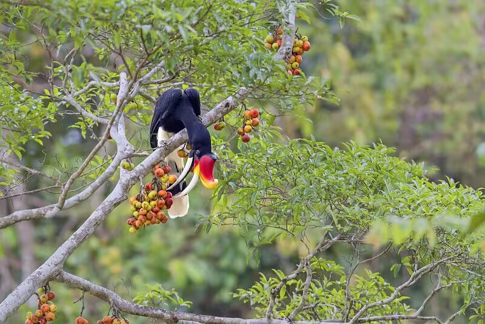
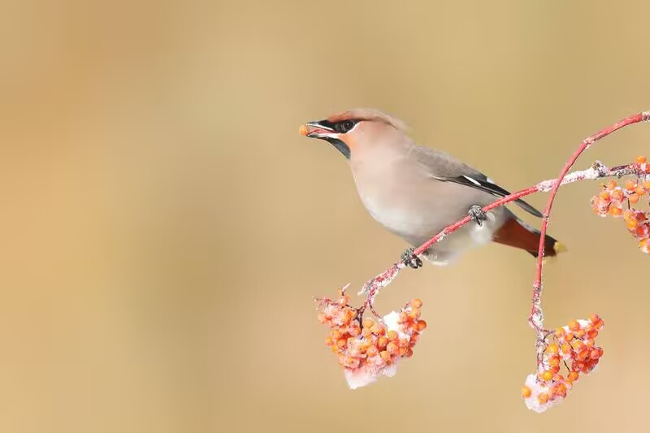

羽翼守望者


鸟类在塑造和维持植物种群与群落方面发挥着基础性的全球作用。食果鸟类通过吞食果实后将种子随粪便排出（内吞种子扩散），部分食谷鸟类则通过搬运和贮藏种子（同吞种子扩散）来实现植物种子的传播。

种子扩散有助于提高发芽率，将种子运送到远离母株的地方，甚至帮助植物在不断变化的气候中扩大分布范围。研究显示，鸟类通过种子扩散可促进热带森林的再生，增加植物多样性。
全球81%的热带树木依赖动物传播种子，失去种子传播者会导致自然再生森林的碳积累量平均减少57%。鸟类作为重要的种子传播者，对碳汇和气候调节具有深远影响。
📖 权威来源：点此处 查看《Birds as seed dispersers of plants: their impacts on plant ecological and evolutionary dynamics》（日本鸟类学会刊, 2025）